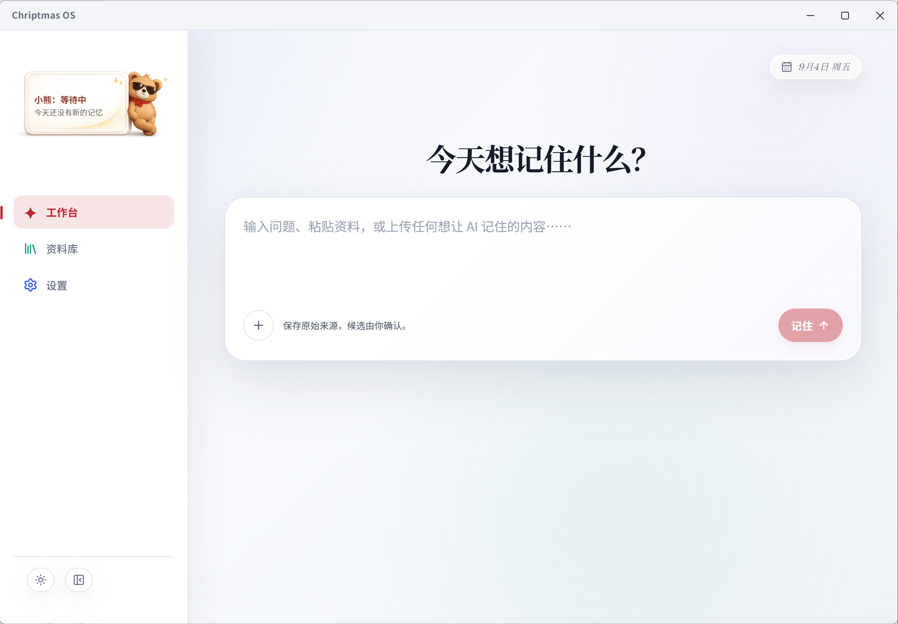

EXPERIENCE / CONNECTIONS
按研究、实习、产品和记录，了解我的具体实践。
01
战略项目与实地调研
学生负责人 · 研究执行与方案设计 · 2024.10—至今
先辨别关键矛盾，再提出方案。
访谈政府领导与当地产业企业家100余人，核对种植、加工、渠道和消费各环节的情况，再结合竞品走访与消费者研究，提出经营建议。
行业与竞品→本地诊断→定位与交付
品牌有知名度，发展动力从哪里来？
扩大访谈后，我修正了对口感偏好的原有假设，转而核对产业链各环节的成本、利润与参与意愿，分析技术、资源配置和治理机制对发展的影响。
实地竞品调研：五常、舒兰
交付：产业经营机制、产品分层与渠道方案 阅读案例↗
从产区对标，走到交易与产品经营。
比较成熟产区如何组织货源、分销、仓储物流和检测服务，据此提出产品分级、礼赠组合与日常加工产品建议。
实地竞品调研：兴化、阳澄湖
交付：交易服务与产品方案、团队研究报告 阅读案例↗
文化表达与日常消费，怎样分别承接？
从非遗酱料的开发诉求出发，重新区分消费场景：以白条产品满足日常需要，以特色加工和酱料产品承接礼赠、文化与体验需求。
实地竞品调研：清远鸡、文昌鸡
交付：产品组合、交易服务、电商与终端规划 阅读案例↗
从吃鱼、喝汤的习惯中识别产品机会。
通过半结构化访谈了解吃鱼、喝汤的搭配习惯，结合清淡汤品需求和湖北地方文化，与团队提出奶汤鳜鱼大单品建议。
鳜鱼研究实地对标：徽州臭鳜鱼
交付：纳入1+4+1顶层设计的产品建议 阅读案例↗
研究如何交给执行者
围绕定位，把任务写到岗位能够执行。
先比较行业、竞品与本地经营条件，明确品牌定位，再安排产品、渠道、传播与执行任务，并考虑政府支持和企业参与所需的条件。
以电商专题为例
图片生成提示词 → 内容创作模板 → 销售话术 → 顾客应答 → 促单指引
把方案整理成提示词、模板和话术，供执行者制作素材、回答顾客问题和开展销售。02
企业实习
从招聘考核到供应链研究，围绕具体业务完成分析与交付。
2026.07—2026.09 · CSIG
腾讯
AI for HR实习生将招聘需求细化为筛选标准，与AI协作实现考核出题和角色权限功能；交付107道题，覆盖20个行业、3批次材料，用于面向200余名学生的考核设计。
↗2024.10—2025.04 · 战略委员会
良品铺子
管理咨询实习生开展4项供应链与通路专项研究，对标10余个竞品案例，形成定位、原产地直采及包装概念建议。
↗03
商业分析竞赛
围绕客户需求，分析技术方案的定价、渠道和服务方式。
互联网+大学生创新创业大赛
柔性液态金属防伪标签
与溯源系统
第七届重庆赛区金奖 · 团队成果负责商业计划书的竞争分析与营销模块，区分生产商、经销商和消费者的需求，运用SWOT、PEST、STP及4P提出定价、渠道和配套服务方案，并承担后期路演。
展开商业方案与个人分工 ↗04
AI工具与个人产品
围绕资料复用、案例检索和日常记录，与AI协作开发工具。
关于我
研究之外，继续观察与创作。
武汉大学硕士 · 重庆大学本科
国家奖学金（2022） · 重庆大学优秀毕业生（2024）
武汉大学优秀学生干部（2025）
微电影《重建》剧本与摄影，团队作品获全国三等奖。
武汉大学 · 2027届硕士研究生宏观质量管理 · 2024.09—2027.06重庆大学 · 工商管理本科 · 2020.09—2024.06
产业与品牌研究是我硕士期间的主要实践。我也曾在腾讯与良品铺子实习，并借助AI开发工具、整理研究方法。